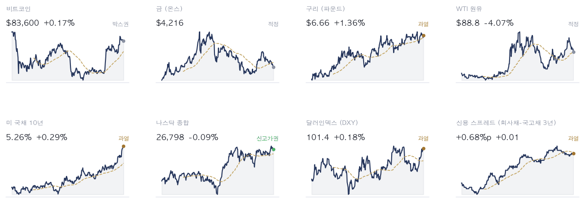
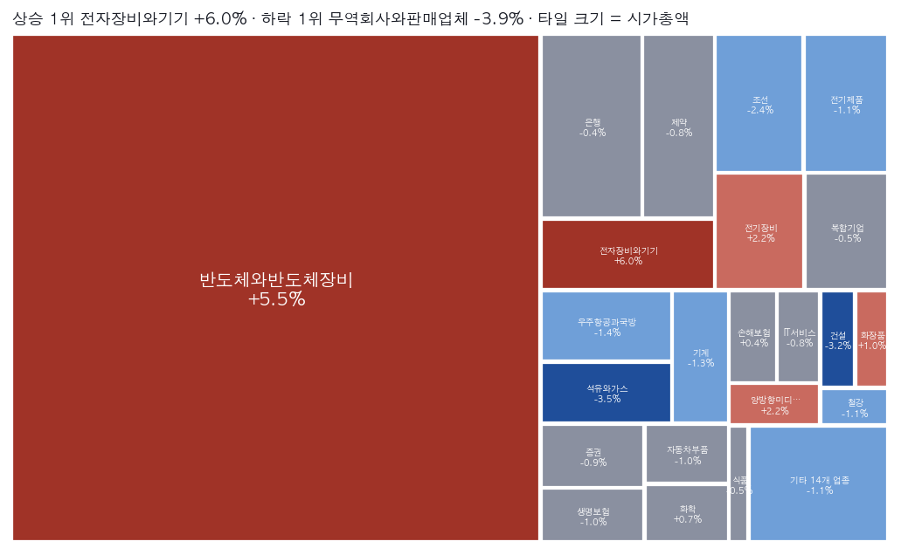
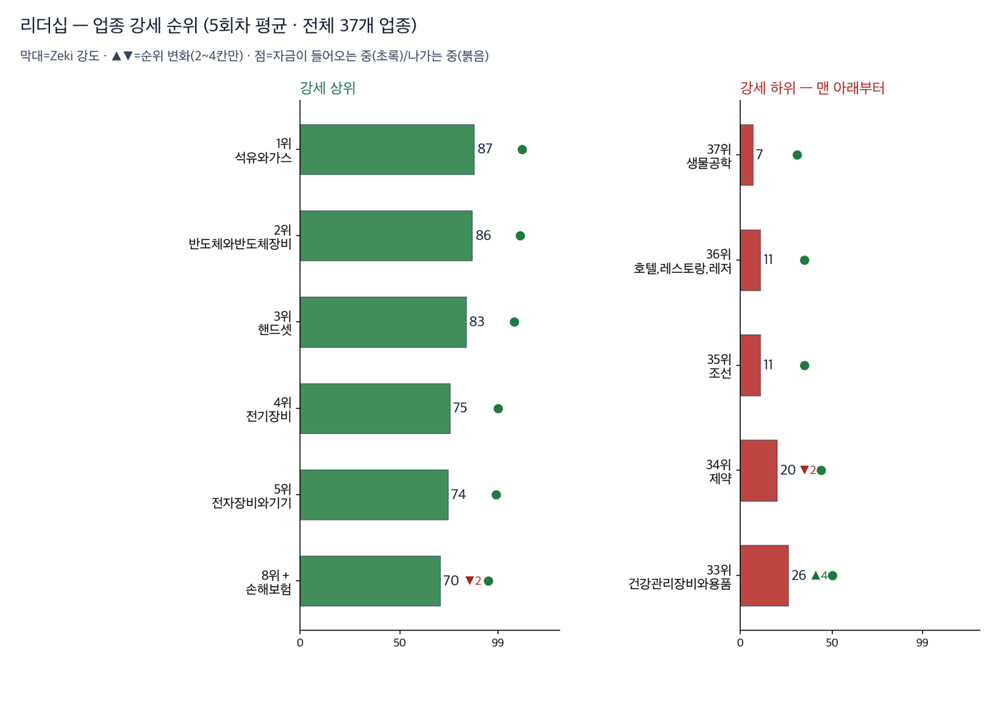
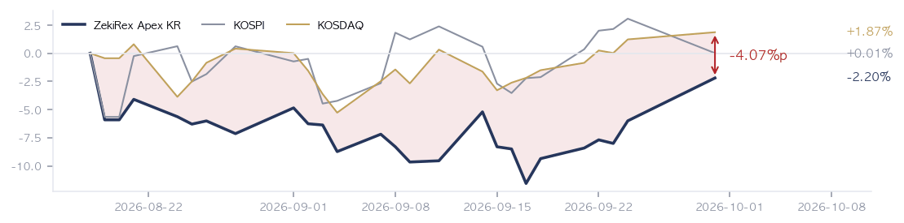
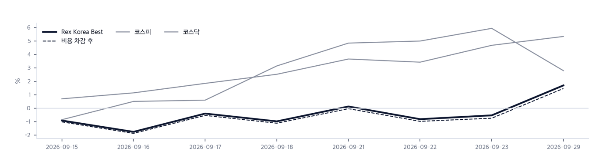

|
ZekiRex™ Apex KR — 2026년 9월 30일
오늘의 판단 · 1/3
데이터 기준 9/29 (KST) 종가 · 간밤 뉴욕 9/29 종가(현지시간) |
ZekiRex™ |
|
|
안내 — 발송 장애로 9월 28일과 29일 한국 뉴스레터가 나가지 못했습니다. 지금은 복구했습니다. 기다리게 해 드려 죄송합니다. 정정 — 9월 24일 한국 뉴스레터는 확정되기 전의 종가를 썼습니다. 확정 종가 기준으로는 저희 기준을 넘은 종목이 15개가 아니라 16개였고 대원전선도 빠지지 않았습니다. 신한지주 종가는 109,900원이 아니라 110,100원, 원·달러는 1,367.20원이 아니라 1,366.70원이었습니다. 브렌트유는 23일 0.64% 내린 것이 아니라 3.86% 올라 103.1달러로 마쳤습니다. 이제 확정 종가가 나온 뒤에 뉴스레터를 만듭니다. 약한 지표에도 미 10년물 금리 상승… 코스피 이틀째 하락 |
| 저희가 정한 규칙이 고른 종목과 그 성적을 매일 그대로 싣습니다. 맞았든 틀렸든 지우지 않습니다. |
|
THE REX CALL
미국 고용과 소비 지표가 약했는데도 10년물 국채금리가 5.26%로 올랐고, 서울에서는 외국인이 하루에 3조원 넘게 팔았습니다.
저희 기준을 넘은 16종목 가운데 한 종목도 사지 않았습니다. 4칸이 모두 차 있어 현금 비중은 0%입니다.
오늘 반드시 알아야 할 것
1. 현지시간 29일 미 국채 10년물 금리가 5.26%로 마쳤습니다. 같은 날 나온 구인 건수와 소비자신뢰 지표는 약했습니다. 약한 지표에도 금리가 오른 것이 걱정거리라는 분석이 나왔습니다. 마이클 바 연준 이사는 추가 인상이 필요할 것이라고 말했습니다. 시장이 보는 다음 달 인상 확률은 70%입니다. (인베스터스비즈니스데일리·이데일리·머니투데이) 2. 29일 코스피는 0.27% 내린 6,870.81로 마쳤습니다. 연휴 뒤 두 장 동안 23일 종가 7,080.92에서 2.97% 내렸습니다. 외국인은 29일 하루에 3조800억원을 팔았습니다. 코스닥은 0.38% 올라 849.80입니다. (머니투데이·매일경제) 3. 엔비디아가 28일(현지시간) 자사주 매입 한도에 1500억달러를 더했습니다. 한국경제는 미국 기업 사상 최대라고 전했습니다. 삼성전자와 SK하이닉스도 자사주를 사고 있습니다. 29일 기타법인 순매수 1조6,284억원에는 두 회사의 자사주 매입이 들어 있습니다. 외국인 매도를 회사가 직접 받아 준 셈입니다. (동아일보·머니투데이) 4. 호주 중앙은행이 29일 기준금리를 4.35%에서 4.60%로 올렸습니다. 동아일보는 한국은행의 연내 추가 인상 가능성도 커졌다고 봤습니다. 은행 1년 만기 예금금리는 2년3개월 만에 연 4%를 넘었습니다. 금리가 오르면 대출이 많은 회사의 이자 부담이 먼저 늘어납니다. (머니투데이·동아일보) 5. SK하이닉스 주가가 약 3개월 전 장중 최고가보다 40% 넘게 내렸습니다. 매일경제는 자회사 솔리다임의 뉴욕 상장설에 따른 중복상장 우려를 이유로 들었습니다. 마이크론은 30일(현지시간) 실적을 냅니다. 메모리 종목을 보고 계시다면 그 발표 전에 비중을 늘리는 것은 한 회사의 숫자에 거는 것과 같습니다. (매일경제·이데일리)
| |
 초록불은 매수 우위, 노란불은 관망, 빨간불은 매수 자제입니다. 칸은 7가지 조건 중 몇 가지를 만족하는지이고, 많을수록 오르는 종목이 넓게 퍼져 있습니다. |
국면 추이 — 8월 22일부터 9월 21일까지 기록이 중단돼 최근 흐름이 아닙니다. 마지막 거래일(9/29)에 빨간불에서 노란불로 바뀌었습니다 방향 — 신호등이 노란불로 올라섰습니다. 22일·23일·29일 판정이 모두 노란불이라 올라가는 조건인 사흘 연속을 채웠습니다. 28일 판정은 기록이 없습니다. 코스피 자체 점검은 7가지 가운데 6가지를 통과했고, 코스닥은 2가지로 23일의 3가지에서 하나 줄었습니다. 저희 규칙에서 이 신호등은 매수를 막지 않습니다. 위험은 종목마다 손절가로 관리합니다.
| |
| 오늘의 조치 |
| 오늘 신규 매매 없음. 규칙이 요구하지 않는 날에 거래하지 않는 것도 하나의 결정입니다. |
|
| 오늘 하나만 깊이 보면 |
|
약한 지표에도 미 10년물 금리 상승… 코스피 이틀째 하락
현지시간 29일 미 국채 10년물 금리가 5.26%로 마쳤습니다. 30년물은 5.59%입니다. 구인 건수와 소비자신뢰 지표가 약했는데도 금리가 올랐습니다. 같은 장에서 S&P 500은 0.17%, 나스닥 종합은 0.09% 내렸습니다. WTI는 3.84% 내린 89.0달러입니다. 왜 그런가. 보통은 지표가 약하고 유가가 내리면 금리도 내립니다. 이날은 반대였습니다. 시장은 경기보다 연준의 추가 인상을 먼저 봤습니다. 바 이사에 앞서 리사 쿡 이사도 28일 인상 여지를 열었습니다. 반대 해석도 있습니다. 약한 지표가 쌓이면 연준이 인상을 멈출 근거가 됩니다. 다음에 무엇이. 남는 질문은 약한 지표가 쌓일 때 연준이 인상을 멈추느냐입니다. 그 전까지는 30일 마이크론 실적이 서울 반도체의 방향을 먼저 가립니다.
그래서 우리는: 저희 장부 4종목은 GS, 지엔씨에너지, 현대해상, 타이거일렉입니다. 29일 타이거일렉은 91,000원으로 올라 매수가 73,500원을 크게 웃돕니다. GS는 4.81% 내린 108,800원입니다. 손절가 106,904원에 4종목 가운데 가장 가깝습니다. 30일 종가가 손절가보다 낮으면 그 종가에 팝니다.
Rex Lens™
| |
| 그 밖에 알아야 할 것 |
| 마이크론, 30일 실적 발표 · 마이크론이 30일(현지시간) 회계연도 4분기 실적을 냅니다. CNBC 집계 주당순이익 예상치는 31.61달러입니다. (Edaily · Investor's Business Daily) → 연휴 뒤 서울 메모리 종목이 받는 첫 실적 숫자입니다. 서울은 10/1 장에서 이 숫자를 받습니다. | | 글로벌 완성차 영업이익 63% 감소 · 한국자동차연구원은 주요 완성차 20개사의 지난해 영업이익이 62.9% 줄었다고 밝혔습니다. 매출은 2.4% 늘었습니다. (Dong-A Ilbo · Money Today) → 전동화 투자, 중국 전기차의 가격 공세, 고관세가 겹친 결과로 분석됐습니다. 저희 명단의 자동차부품 종목은 금호타이어 하나입니다. 완성차 이익이 줄면 부품 단가 압박으로 이어질 수 있습니다. | | 코스닥 세그먼트 제도, 내년 하반기 시행 유력 · 한국거래소가 코스닥 상장사를 특성에 따라 나누는 세그먼트 제도를 내년 중 도입합니다. 올해 4분기에 공청회를 엽니다. (Yonhap KR · Money Today) → 상위 구간 편입 혜택과 하위 구간 유동성 방안이 쟁점입니다. 코스닥 소형주를 들고 계시다면 공청회에서 나올 구간 기준을 보십시오. | | 상장폐지 시가총액 기준 강화, 내년 7월로 연기 · 한국거래소가 시가총액 상장폐지 기준 강화를 내년 7월로 6개월 미뤘습니다. 퇴출 위기였던 500곳 가까운 회사가 시간을 벌었습니다. (Money Today) → 소형주를 들고 계시다면 보유 종목이 새 기준에 걸리는지 확인할 시간이 생겼습니다. 기준 자체가 바뀐 것은 아닙니다. | | TSMC, 텍사스에 두 번째 미국 공장 추진 · TSMC가 애리조나에 이어 텍사스 댈러스에 웨이퍼 공장을 추진한다고 대만 연합신문망이 전했습니다. 관세 압박과 고객사 요구를 이유로 들었습니다. (Money Today) → 같은 날 삼성전자는 파운드리 고객사를 2029년까지 2017년의 약 4배로 늘리겠다고 밝혔습니다. 두 회사가 미국 안 생산을 두고 경쟁하고 있습니다. |
|
한국과 미국을 잇는 것: 서울은 뉴욕의 금리를 이틀째 받았습니다. 30일(현지시간) 마이크론 실적은 반대 방향의 재료입니다. 금리가 성장주를 누르는 가운데 메모리 수요가 이어지는지가 10/1 서울 반도체의 방향을 가릅니다. |
|
|
시장이 오늘 한 일 · 2/3
데이터 기준 9/29 (KST) 종가 · 간밤 뉴욕 9/29 종가(현지시간) |
ZekiRex™ |
|
|
| 핵심 지표 |
코스피 6,871 -0.27% · 고점 −24.6% 29일 0.27% 내려 6,870.81로 마쳤습니다. 연휴 뒤 두 장 동안 2.97% 내렸고, 외국인이 29일 하루에 3조800억원을 팔았습니다. 박스권 | 코스닥 850 +0.38% · 고점 −30.7% 박스권 | 원/달러 ₩1,353.00 29일 1,353.40원으로 0.49% 내렸습니다. 원화가 강해지면 수출 회사의 달러 매출은 원화로 줄고, 원유를 사 오는 값은 싸집니다. 과매도 | 국고채 3년 4.07% 29일 4.07%입니다. 미 국채 10년물은 5.26%로 올랐는데 서울 금리는 내렸습니다. 두 시장 금리가 반대로 움직인 날이므로, 30일에 그 차이가 좁혀지는지 보십시오. 과열 | S&P 500 7,671 신고가권 | 포트폴리오 -2.20% 현금 0% · 보유 4종목 8월 18일 시작 이후 -2.20%이고 코스피는 +0.01%입니다. 코스피보다 뒤에 있습니다. 23일의 -6.00%에서 좁혀졌지만 좋지 않은 숫자이며 그대로 알려 드립니다. 설정 이후 |
|
Rex Pulse 거시 지표 16종 1년 추이  Rex Pulse™ — 지수·가상자산 / 통화 / 원자재 / 채권 16종, 1년 흐름과 50일 평균값(점선) · 기준 한국 9/29 종가, 뉴욕 9/29 종가(현지시간) |
미 국채 10년물은 5.26%, 30년물은 5.59%입니다. 달러인덱스는 101.4입니다. WTI는 3.84% 내려 89.0달러이고, 구리는 파운드당 6.66달러로 1.44% 올랐습니다. 유가가 내렸는데도 금리가 오른 것은 시장이 물가보다 연준을 먼저 본다는 뜻입니다. 보실 것은 2가지입니다. 먼저 10년물이 5% 위에 머무는지입니다. 다음은 원화 강세가 이어지는지입니다. 원화가 강해지면 외국인 매도의 환손실 부담이 줄어듭니다. |
업종 히트맵 — 오늘의 상승·하락 지도  색은 당일 등락(짙을수록 큼), 타일은 시가총액입니다. 상단에 당일 상승·하락 1위가 적혀 있고, 큰 칸이 움직인 날이 지수가 움직인 날이라는 뜻입니다 — 아래 리더십 순위(추세의 힘)와 함께 읽으십시오. |
| 리더십 — 업종 강세 순위 |
 이 그림 읽는 법 | 막대 | 그 업종 종목들을 Zeki 강도 순으로 세웠을 때 종목 절반이 그 위, 절반이 그 아래인 값입니다. 최근 5회차를 평균해 하루치 흔들림을 걷어냈습니다. | | ▲▼ 숫자 | 하루 전보다 순위가 몇 칸 움직였는지입니다. 1칸은 너무 작고 5칸 이상은 절반이 되돌아와서(실측) 2~4칸만 적습니다. | | 점 | 20거래일 자금 순위의 방향입니다. 초록이면 들어오는 중, 붉으면 나가는 중입니다. | | 공동 순위 | 값이 같으면 같은 순위입니다. 억지로 가르지 않습니다. | | 강세 상위 | 강도가 가장 높은 업종들입니다. 자리가 열리면 여기서부터 찾습니다. | | 강세 하위 | 전체 업종 가운데 맨 아래입니다. 번호는 왼쪽과 같은 잣대라, 38개 업종이면 38위가 가장 약합니다. 지금 새로 살 자리가 아니고, 들고 계신 종목이 여기 속하면 손절가부터 확인하실 자리입니다. 바닥에서 돌아서는 업종은 막대보다 점이 먼저 초록으로 바뀝니다. | | 번호가 건너뛰면 | ＋ 표시가 붙은 업종입니다. 맨 아래 다섯에 들지는 않았지만 본문이 짚었거나 저희가 들고 있어 함께 실었습니다. 자료가 빠진 것이 아닙니다. |
| 순위 | 업종 | Zeki 강도 | 변화 |
|---|
| 1위 | 석유와가스 | 87 | 그대로 | | 2위 | 반도체와반도체장비 | 86 | 그대로 | | 3위 | 핸드셋 | 83 | 그대로 | | 37위 | 생물공학 | 7 | 그대로 | | 36위 | 호텔,레스토랑,레저 | 11 | ▲1 | | 35위 | 조선 | 11 | ▼1 |
|
| 수급 — 외국인·기관은 어느 쪽이었나 |
|
수급과 거래량을 한 줄로 | 종목 | 외국인 · 기관 20거래일 | 거래량 | 어떻게 읽나 |
|---|
| SFA반도체 036540 | 외 +12.4 · 기 -2.7 | 3.55배 | 주의 — 외국인만 사고 다른 쪽은 팔았습니다 | | 포스코인터내셔널 047050 | 외 -1.7 · 기 +18.6 | 0.35배 | 주의 — 기관만 사고 다른 쪽은 팔았습니다 | | 포스코DX 022100 | 외 -1.0 · 기 +9.8 | 0.25배 | 주의 — 기관만 사고 다른 쪽은 팔았습니다 | | 대한항공 003490 | 외 +9.8 · 기 +2.5 | 1.29배 | 관심✓ — 외국인·기관이 함께 샀고 거래도 늘었습니다 | | 우리금융지주 316140 | 외 +14.5 · 기 +2.8 | 0.55배 | 확인✓ — 함께 샀지만 거래가 얕습니다 | | 대우건설 047040 | 외 -7.2 · 기 -4.5 | 1.37배 | 주의 — 둘 다 파는데 물량이 늘었습니다 | | 두산에너빌리티 034020 | 외 -7.7 · 기 -0.9 | 0.94배 | 관망 — 둘 다 팔지만 거래가 말랐습니다 | | LG디스플레이 034220 | 외 -11.5 · 기 -0.2 | 0.70배 | 관망 — 둘 다 팔지만 거래가 말랐습니다 | | SK하이닉스 000660 | 외 -6.5 · 기 -0.6 | 0.62배 | 관망 — 둘 다 팔지만 거래가 말랐습니다 | | 넷마블 251270 | 외 -11.2 · 기 -0.2 | 0.29배 | 관망 — 둘 다 팔지만 거래가 말랐습니다 |
거래량은 최근 5거래일 평균 ÷ 50일 평균입니다. ✓ 는 저희 진입 규칙(MACD 라인 > 0)도 통과했다는 뜻이고, ✗ 는 수급은 좋지만 규칙 밖이라는 뜻입니다. 이 읽는 법이 맞는지는 지금 세고 있습니다. |
결론은 아직 없습니다 — 칸마다 9건이고 60건이 필요합니다. 하루 9건씩 쌓이므로 약 6거래일 뒤에 답이 나옵니다. 그때 답하는 것은 「외국인·기관이 산 종목이 정말 올랐나」입니다. 9월 18일부터 세고 있습니다 — 기관만 사는 곳 9건 · 둘 다 사는 곳 9건 · 둘 다 파는 곳 9건 · 외국인만 사는 곳 9건.
이름을 확인한 종목 전부를 넷으로 갈랐습니다. 오른쪽으로 갈수록 외국인이 샀고, 위로 갈수록 기관이 샀습니다. 지금 누가 사고 있는지를 보여 주는 자리이지 무엇을 사라는 자리가 아닙니다.
업종 — 값의 강세와 돈의 흐름을 나란히
돈이 먼저 온 곳 — 값은 아직
| 업종 | 강세 | 자금 | 20거래일 |
|---|
| 생명과학도구및서비스 | 46 | 12 | +352,686주 |
| 증권 | 30 | 10 | +608,168주 |
| 부동산 | 26 | 8 | +2,757,603주 |
값만 센 곳 — 돈은 빠지는 중
| 업종 | 강세 | 자금 | 20거래일 |
|---|
| 건설 | 7 | 45 | -10,832,037주 |
| 전기장비 | 5 | 34 | -3,964,107주 |
| 에너지장비및서비스 | 13 | 40 | -5,548,619주 |
강세 순위 — Zeki 강도(12개월 가중)로 세운 순위입니다. 최근 5회차를 평균해 하루치 흔들림을 걷어냈습니다.
자금 순위 — 20거래일 순매수로 세운 순위입니다. 값이 아니라 돈이 들어온 양을 봅니다.
공동 순위 — 값이 같으면 같은 순위를 줍니다. 억지로 가르지 않습니다.
두 순위가 어긋나면 — 그 자리가 볼 만합니다. 돈이 먼저 오면 값이 아직인 것이고, 값이 먼저 세면 돈이 빠지는 중일 수 있습니다.
| Rex 25™ — 당일 등락률 전체 순위 |
| 01 ● 219130 타이거일렉+9.77% | | 02 083450 GST+8.98% | | 03 252990 샘씨엔에스+8.93% | | 04 281820 케이씨텍+6.86% | | 05 192820 코스맥스+3.34% | | 06 ● 119850 지엔씨에너지+3.12% | | 07 ● 001450 현대해상+2.57% | | 08 005930 삼성전자+1.85% | | 09 098120 마이크로컨텍솔+1.73% | | 10 161890 한국콜마+1.08% | | 11 317400 자이에스앤디+0.72% | | 12 073240 금호타이어+0.29% | | 13 086790 하나금융지주+0.07% | | 14 105560 KB금융-0.35% | | 15 055550 신한지주-0.45% | | 16 ● 078930 GS-4.81% |
|
저희 기준을 넘은 16종목 가운데 11종목은 자리가 없어 사지 못했고, 4종목은 이미 들고 있어 추가로 사지 않았습니다. GST 1종목은 품질 하한에 못 미쳐 뺐습니다. 16종목 가운데 반도체가 6종목으로 가장 많고 은행이 3종목입니다. 29일 반도체 4종목이 7~10% 오르는 동안 은행 3곳은 거의 움직이지 않았습니다. 그래서 30일에는 반도체의 상승이 마이크론 발표 전에 이어지는지 보셔야 합니다. |
| 16종목뿐입니다. 25자리 가운데 오늘 조건을 만족한 것이 16개라는 뜻이고, 빈자리는 채우지 않습니다. ● 표시가 우리 보유 종목입니다. 순서는 등락률만 따릅니다 — 하락 상위에 보유 종목이 있어도 그 자체가 매도 신호는 아닙니다. 매도는 −8% 손절과 오실레이터 이탈, 둘뿐입니다. |
| 관문을 통과한 종목 — 자리가 없어 담지 못한 이름들 |
| 반도체·하드웨어 4 | | 098120 마이크로컨텍솔 | RS 96 | ₩58,800 | | 252990 샘씨엔에스 | RS 95 | ₩20,000 | | 005930 삼성전자 | RS 93 | ₩275,000 | | 281820 케이씨텍 | RS 85 | ₩88,800 | | 금융 3 | | 055550 신한지주 | RS 82 | ₩110,300 | | 086790 하나금융지주 | RS 81 | ₩134,500 | | 105560 KB금융 | RS 80 | ₩173,200 | | 소비 3 | | 161890 한국콜마 | RS 94 | ₩149,600 | | 192820 코스맥스 | RS 90 | ₩278,500 | | 073240 금호타이어 | RS 82 | ₩6,830 | | 산업재·인프라 1 | | 317400 자이에스앤디 | RS 97 | ₩9,750 |
|
왜 못 담았나. 자리는 넷뿐이고 각 자리에 총자산 25%가 들어갑니다 — 한 종목이 −8%에 걸려도 계좌 전체로는 2% 손실이 되도록 맞춘 구조입니다. 자리를 비우는 길은 손절과 오실레이터 이탈 둘뿐이라, 더 좋은 후보가 나와도 갈아타지 않습니다.
이 목록이 뜻하는 것. 16개가 조건을 통과했고 그중 보유 중인 종목을 뺀 11개가 대기 중입니다. RS는 80~97입니다. 우리 4자리는 반도체·하드웨어 2, 에너지·정유 1, 금융 1로 나뉘어 있고 가장 큰 쪽이 반도체·하드웨어입니다 — 그래서 하루 등락이 지수와 평균 2.2%p 벌어졌고, 가장 크게 갈린 9/7 세션에는 코스피 보다 5.6%p 더 내렸습니다. 자리가 하나 열리면 이 순서의 맨 위부터 검토합니다. 매수 추천이 아닙니다. |
|
| 한 줄 정리: 이 뉴스레터는 9월 29일 서울 종가를 다룹니다. 28일 종가를 다룬 29일 아침 뉴스레터는 저희 사정으로 보내 드리지 못했습니다. 그래서 오늘은 연휴 뒤 두 장을 함께 다룹니다. 앞에 놓은 뉴욕 장은 서울이 마감한 뒤 열린 같은 날짜의 장입니다. 두 시장의 숫자는 각각 제 시장의 마감 시각에 매겨진 값이며, 칸마다 기준일을 함께 싣습니다. |
|
|
|
우리가 한 일 · 3/3
데이터 기준 9/29 (KST) 종가 · 간밤 뉴욕 9/29 종가(현지시간) |
ZekiRex™ |
|
|
| 종목 | 비중 | 평가금액 | 평가손익 | 현재가 | 손절가 | 여유 | 보유 기간 | 다음 이벤트 | | GS | 22% | ₩216,620,800 | −₩14,733,400 | ₩108,800 | ₩106,904 | +1.8% | 36일 | 확인 안 됨 | | 현대해상 | 24% | ₩230,257,150 | −₩6,697,550 | ₩49,850 | ₩47,196 | +5.6% | 18일 | 확인 안 됨 | | 지엔씨에너지 | 27% | ₩262,716,300 | +₩25,756,500 | ₩56,100 | ₩46,552 | +20.5% | 18일 | 확인 안 됨 | | 타이거일렉 | 27% | ₩268,450,000 | +₩51,625,000 | ₩91,000 | ₩67,620 | +34.6% | 12일 | 확인 안 됨 | | 현금 | 0% | ₩3,150 | 아직 투자하지 않은 돈입니다 |
계좌 요약 | 시작 자본 | ₩1,000,000,000 | 2026-08-18 설정 | | 실현 손익 | −₩77,903,150 | 판 종목에서 확정된 금액 | | 평가 손익 | +₩55,950,550 | 들고 있는 종목의 장부상 손익 | | 현재 평가액 | ₩978,047,400 | 시작 대비 −2.20% | | 최고 평가액 | ₩1,000,000,000 | 지금은 고점 대비 −2.20% |
시작 자본에 실현 손익과 평가 손익을 더하면 현재 평가액이 됩니다. |
포트폴리오 누적 수익률 대 벤치마크  기록 시작(8/18) 이후 — 하루보다 이쪽이 중요 | 계좌 | −2.20% | | 기준 | | 코스피 | +0.01% | | −2.21%p | | 코스닥 | +1.87% | | −4.07%p |
8/18부터 9/29까지, 26거래일입니다. 지금 지수와의 차이 — 코스피 대비 −2.21%p · 코스닥 대비 −4.07%p 8월 18일 시작 이후 저희 장부는 -2.20%이고, 코스피는 +0.01%, 코스닥은 +1.87%입니다. 두 지수보다 뒤에 있고, 좋지 않은 숫자지만 그대로 알려 드립니다. 23일의 -6.00%에서 좁혀진 것은 타이거일렉이 91,000원까지 오른 덕입니다. 같은 두 장에서 코스피는 2.97% 내렸습니다. 종료된 매매 6건 가운데 이익으로 끝난 것은 1건입니다. |
| Rex Korea Best — 이 뉴스레터에 실린 이름들의 성적표 |
무엇인가. 이 뉴스레터에 이름이 오른 회사들을 모아 만든 지수입니다. 관문을 통과한 종목과 포트폴리오 보유 종목을 합쳐 최대 스물아홉 곳까지, 모두 같은 비중으로 담습니다. 명단은 판이 나가는 날 그대로 적어 두고 뒤에 고치지 않습니다 — 지나고 나서 좋았던 것만 골라 넣으면 어떤 성적표도 좋아 보이기 때문입니다. 무엇을 위한 것인가. 저희가 지면에 적은 이름이 실제로 값을 하는지 숫자로 남기기 위해서입니다. 그래서 같은 기간 코스피 · 코스닥과 나란히 놓고, 사고파는 비용을 뺀 뒤의 숫자도 함께 싣습니다. 숫자 읽는 법. Zeki 강도는 같은 기간 다른 주식과 견준 주가의 힘을 100점 만점으로 매긴 것입니다. 100점에 가까울수록 많이 오른 쪽입니다. 아닌 것. 살 수 있는 상품이 아니고, 추천도 아니며, 저희 계좌의 성적도 아닙니다. |
 이 그림 읽는 법 | 무엇인가 | 그날 편지에 실린 이름 전부(Rex 25 + 보유 종목)를 똑같은 무게로 담았다면 어떻게 됐을지입니다. 살 수 있는 상품이 아니라 저희 명단의 성적표입니다. | | 두 선 | 실선은 비용 전, 점선은 매매비용을 뺀 뒤입니다. 명단이 바뀌면 갈아타는 비용이 들기 때문에 둘을 함께 싣습니다. | | Best 의 뜻 | 시장에서 최고라는 뜻이 아니라 저희 기준으로 가장 높은 점수를 받은이라는 뜻입니다. | | 길이 | 짧은 구간은 운과 실력을 가르지 못합니다. 120거래일이 쌓이기 전까지는 이 숫자로 판단하지 마십시오. |
|
Rex Korea Best — 지수 출범 이후 (9/14→9/29) | Rex Korea Best | +1.46% | | 기준 | | 코스피 | +2.79% | | −1.33%p | | 코스닥 | +5.33% | | −3.87%p |
8거래일 · 비용을 뺀 값입니다. 비용 전은 +1.69%입니다. 오른쪽은 우리가 앞선 폭입니다. | 지수 대비 −3.87%p. 8회차째입니다. 저희가 미리 정한 신뢰 문턱은 120회차이고 지금은 120회 가운데 8회째입니다. 이 숫자로는 아직 잘한다고도 못한다고도 말할 수 없습니다. |
8거래일치입니다. 짧은 구간은 운과 실력을 가르지 못하므로 120거래일이 쌓이기 전까지는 이 숫자로 판단하지 마십시오. 많이 오른 쪽 | 타이거일렉 219130 | +12.62% — 평소보다 훨씬 많이 거래됐습니다. 값은 지난 1년 중 가장 높습니다. | | 샘씨엔에스 252990 | +10.80% — 평소보다 훨씬 많이 거래됐습니다. 값은 지난 1년 중 가장 높습니다. | | 현대해상 001450 | +5.17% |
많이 내린 쪽 | 자이에스앤디 317400 | −1.42% | | GS 078930 | −1.18% — 평소보다 훨씬 적게 거래됐습니다. | | KB금융 105560 | −0.35% |
새로 들어온 종목 | 삼성전자 005930, GST 083450, 케이씨텍 281820 | | 저희 조건을 새로 갖춰 명단에 올랐습니다 |
빠진 종목 | 롯데렌탈 089860 | 9월 14일부터 8거래일, +0.20%. 저희 조건을 더는 갖추지 못했습니다 | | 가비아 079940 | 9월 22일부터 2거래일, −2.44%. 저희 조건을 더는 갖추지 못했습니다 |
|
| Rex Radar™ — 앞으로의 일정 |
| 이번 주의 핵심 — 경기가 식어도 금리가 내리지 않으면, 먼 미래 이익에 값을 매긴 성장주가 먼저 흔들립니다. 서울에서는 외국인이 그 부담을 먼저 팔았습니다. | 9월 30일(수) · 서울 종가 GS 손절가 판정핵심GS는 29일 종가 108,800원으로 손절가 106,904원에 4종목 가운데 가장 가깝습니다. 볼 숫자: 30일 GS가 손절가 106,904원 위에서 마치는지 보십시오. | 10월 1일(목) 새벽 · 서울 (미국 9/30 수 장 마감 후, 현지시간) 마이크론 실적 발표핵심연휴 뒤 서울 메모리 종목이 처음 받는 실적 숫자입니다. 볼 숫자: 10/1 장에서 타이거일렉이 손절가 67,620원 위를 지키는지 보십시오. |
|
|
| 2026-09-29 종가 기준 심사 대상 618종목 가운데 16종목이 조건을 통과했습니다. 조건 통과는 매수 추천이 아닙니다. |
| 출처: 한국거래소(KRX) 공시 시세, 15:30 종가 · 서울외국환중개 고시환율(네이버 금융) · 야후 파이낸스 · 국고채·회사채 3년 금리: 네이버 금융 |
|
본 리포트는 정보 제공 목적이며 개별 투자 자문이 아닙니다. ZekiRex™ Apex KR는 10억 원 규모의 모의 포트폴리오를 규칙 기반으로 운용합니다. 실제 계좌도, 주문도, 사고판 일도 없습니다. 표시된 성과에는 수수료와 세금, 매매 시 가격 미끄러짐이 반영되지 않았습니다. 종목 자료에는 상장폐지된 회사가 빠져 있습니다. 살아남은 회사만 세는 셈이라 성과가 실제보다 높게 나옵니다. 과거의 성과는 미래를 보장하지 않으며, 투자에는 원금 손실 위험이 따릅니다. |
| This is the Rex Way, ZekiRex™ |